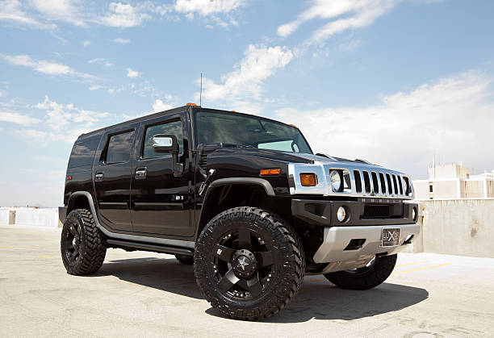
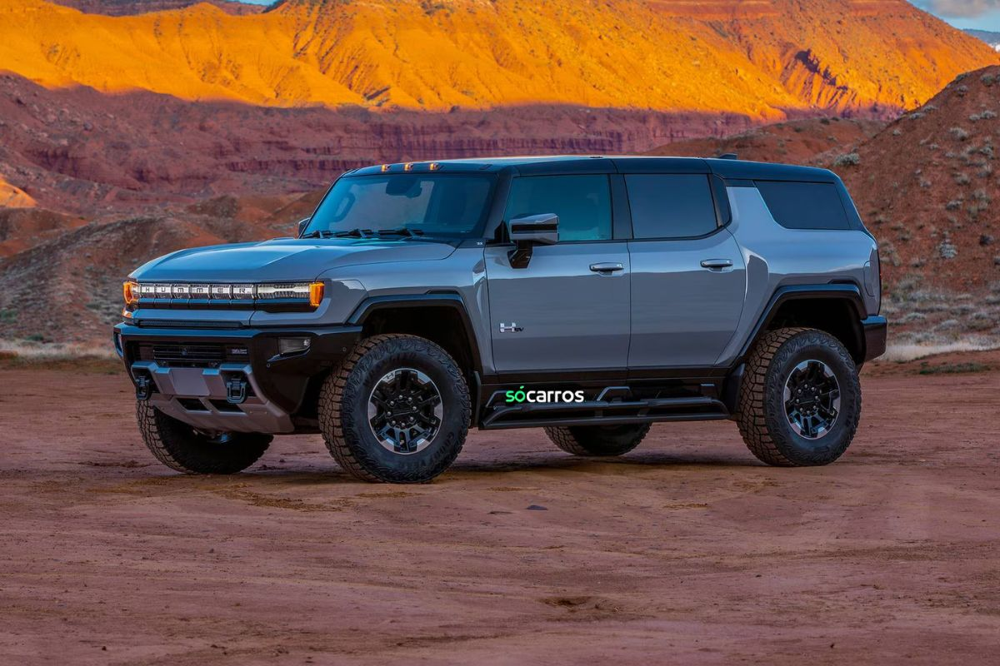
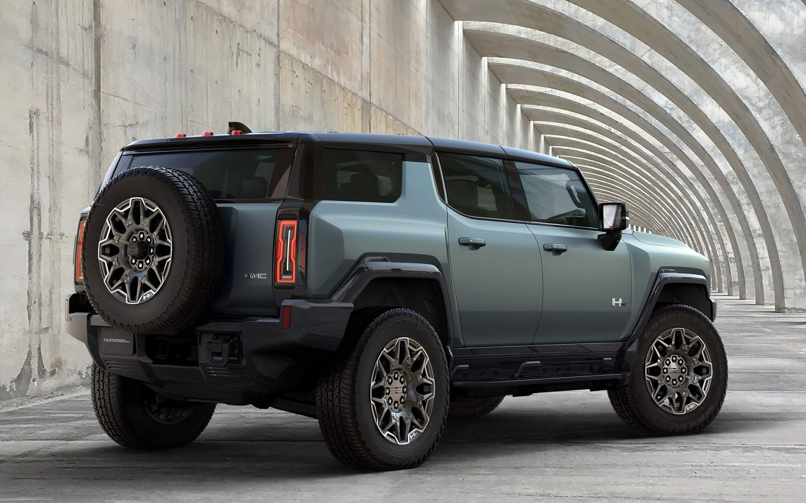
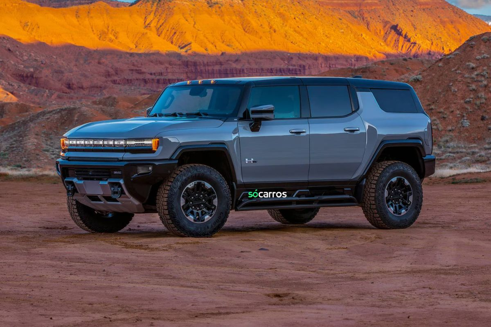
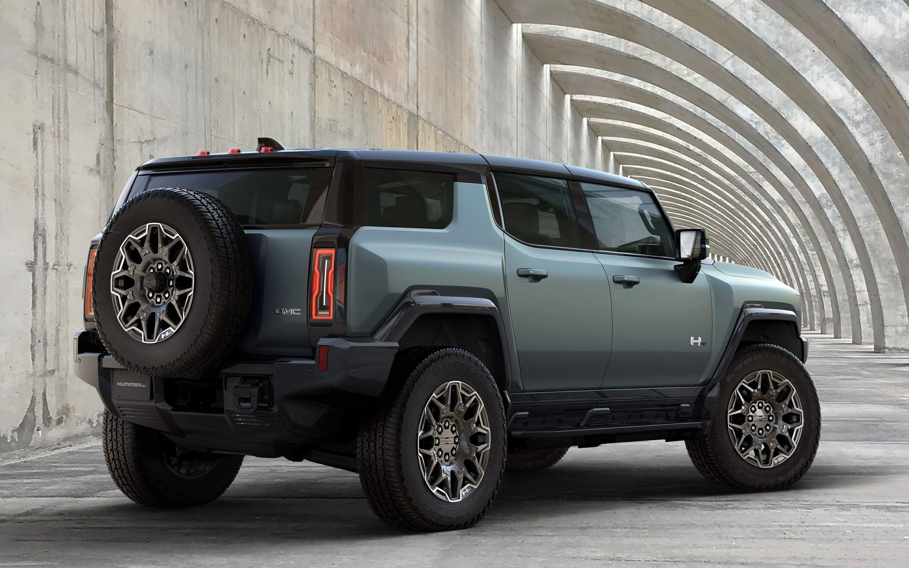
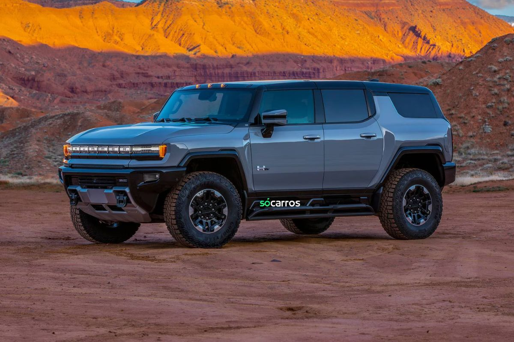
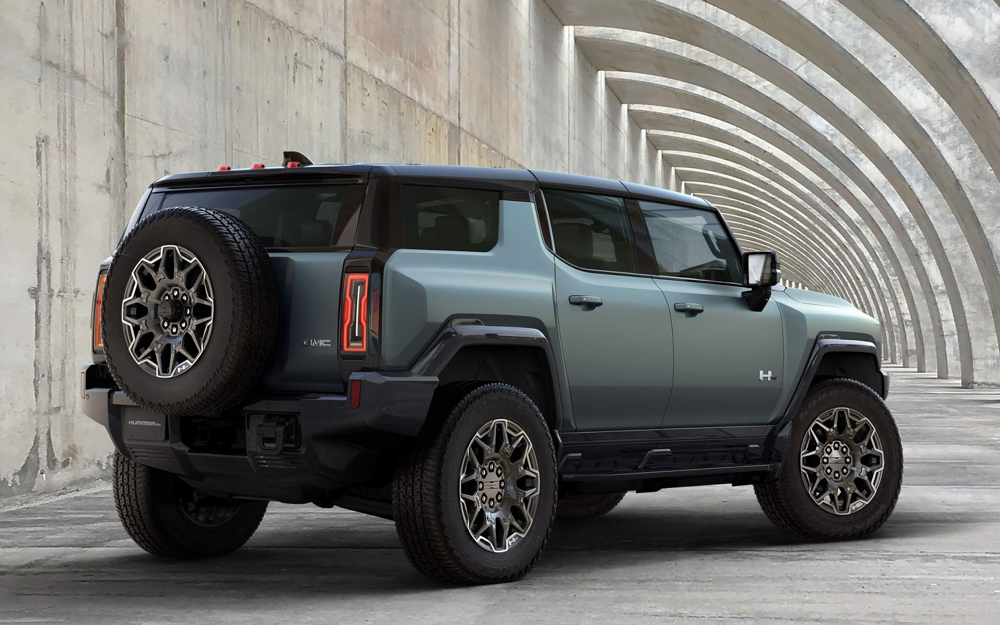

Serviços Hummer
Serviços Hummer

 





Cuidado final do Hummer
- Plano de manutenção abrangente adaptado às especificações robustas do Hummer.
- Inclui serviços essenciais, como trocas de óleo, substituições de filtros, verificações de fluidos e rodízios de pneus para manter seu Hummer nas melhores condições para aventuras off-road.
Melhorias no desempenho do Hummer
- Instalação de peças de desempenho Hummer genuínas e atualizações para capacidades off-road aprimoradas.
- Otimiza potência, torque e suspensão para enfrentar terrenos desafiadores.
Diagnóstico e Reparo Hummer
- Ferramentas avançadas de diagnóstico e técnicos especializados para resolver problemas específicos de veículos Hummer.
- Diagnóstico e reparo de componentes de motor, transmissão e chassi para garantir desempenho confiável.
Refinamento do interior do Hummer
- Limpeza e restauração profissional do interior para manter conforto e durabilidade.
- Inclui limpeza de estofados, restauração do painel e proteção contra uso intenso.
Ajuste de suspensão do Hummer
- Ajustes de suspensão personalizados para melhorar a qualidade do passeio e desempenho off-road.
- Melhora a articulação, distância do solo e estabilidade em terrenos acidentados.
Serviços de sistema de freio Hummer
- Inspeção, reparo e atualização de componentes de freio para poder de parada confiável dentro e fora da estrada.
- Garante confiabilidade e segurança durante condições de direção exigentes.
Otimização do motor Hummer
- Ajuste personalizado do motor para maximizar o desempenho e a eficiência sem comprometer a durabilidade.
- Melhora a resposta do acelerador e a entrega de torque para situações off-road exigentes.
Aprimoramento do sistema de escapamento Hummer
- Instalação de sistema de escapamento de alto fluxo para melhor respiração do motor e som aprimorado.
- Aprimora o desempenho off-road e fornece uma nota de escapamento imponente.
Serviços de rodas e pneus Hummer
- Alinhamento de rodas, balanceamento de pneus e instalação de pneus off-road para máxima tração e durabilidade.
- Garante desempenho confiável e estabilidade em terrenos acidentados.
Preparação para aventura off-road do Hummer
- Serviços de preparação e configuração para expedições off-road, incluindo instalação de equipamentos de recuperação e inspeções de veículos.
- Garante prontidão e segurança para sua próxima aventura off-road.